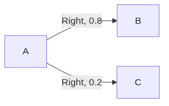

Reinforcement Learning
Table of Contents
- 1. Introduction
- 1.1. Components of RL
- 1.2. Environment Adaptor
- 1.3. Deterministic vs Stochastic Policies
- 1.4. RL as a 3rd Maching Learning Paradigm
- 1.5. Foundational Pillars of Reinforcement Learning
- 1.6. Key Features of RL
- 1.7. Elements of RL
- 1.8. Exploration and Exploitation
- 1.9. Main RL Approaches
- 1.10. Episode
- 1.11. Transition Table
- 2. Tic-Tac-Toe as a Reinforcement Leaning Problem
- 3. Multi-Armed Bandit Problem
- 4. MDP: Markov Decision Process
- 5. Q-Learning
- 6. Feedback
1. Introduction
- Reinforcement learning is a branch of AI where an agent learns how to make decisions by interacting with its environment.
The goal is to learn how to take actions in order to maximize reward.
Note: Self-play is a training method where an AI agent improves its skills by repeatedly competing against itself or its past versions.
1.1. Components of RL
- Agent
- This is the learner/decision maker.
- Environment
- Everything the agents interact with.
- State (S)
- Current situation of the environment.
- For example, in Tic Tac Toe it’s a \(3 \times 3\) grid (so 9 boxes) and each box
can be
X,Oor empty. Hence the number of states are \(3^{3 \times 3}\)
- Action (A)
- Choices available to the agent.
- Policy (π(a|s))
- This is the agent’s way of behaving at a given time.
- It roughly maps states with the action to be taken in those states.
- This is called the actor as it takes the current state and decides what action to take.
- Reward (R)
- This is a single number sent by the environment to the agent.
- It depends on the current state and action of the agent.
- A negative reward is called a penalty. Eg. hitting a wall, losing a game, etc. are unfavourable results and must be penalized.
- Value
- Rewards tell us what is good immediately, but value function tells us what is good in the long run.
- It’s the total reward an agent can expect to accumlate over the future, starting from that state.
- This is called the critic as it scores the actions.
1.2. Environment Adaptor
- These are interfaces/translators between RL agents and their environment.
- They provide common functions across different agents and environments to make it normalized and consistent.
Some common methods provided look like:
env.reset() env.step(action) env.action_space env.observation_space
- Some common environment adaptors are:
- Arcade learning Environment
- CARLA
- OpenAI Gym
- OpenAI Retro
- Opensim
- PyGame Learning Environment
- ViZDoom
1.3. Deterministic vs Stochastic Policies
1.3.1. Deterministic
- Produces the exact same output for a given input
- π(s) = a
1.3.2. Stochastic / Probabilistic
- Same input can result in a varying output
- π(a|s)
- Probability of action a, given state s
1.4. RL as a 3rd Maching Learning Paradigm
1.4.1. Supervised Learning
- This is where you have labeled data \((x,y)\), where \(x\) is the input, and \(y\) is the label (or correct answer).
- The model learns a function \(y = f(x)\). In other words it can map \(f(x) \rightarrow y\).
- Here the model is being told the correct answer at every step, and hence tries to generalize, using instructive feedback.
- Eg. Linear/Logistic Regression, Decision Trees, Neural Networks, etc.
- Supervised learning is insufficient as it’s impractical to obtain correct labelled examples representative of all situations in which the agent must act.
1.4.2. Unsupervised Learning
- This is where you have unlabeled data \(x\).
- The model finds patterns in the data.
- Here you have a large amount of data, and you’re trying to narrow it down to more abstract qualities to make clusters. In a way, it tries to compress the data.
1.4.3. Reinforcement Learning
- Here you have a series of actions that unfold over time.
- You’re not told how good/bad each action was. You’re told how good the result was.
- Supervised or unsupervised learning uses non-interactive learning, whereas reinforcement learning uses interactive learning.
- While supervised learning used instructive feedback, reinforcement learning uses evaluative feedback.
1.5. Foundational Pillars of Reinforcement Learning
| Pillars | Arcade Minds 2015 | AlphaGo 2016 |
|---|---|---|
| Objective (Final Goal) | Complete the game with the highest score | Win the game |
| State (Current Condition of the Environment) | Raw pixels inputs | Position of all pieces |
| Action (A Valid Move the Agent can Take) | Left, right, up, down | Where to put the next piece down |
| Reward (A Scalar feedback signal the Environment Provides) | Score increase/decrease at each time step | 1 if you win the game and 0 if you lose |
The last 3 (state, action and reward) are components of RL.
1.6. Key Features of RL
1.6.1. Closed Loop Interaction
- Output or response is fed back to the sender or system.
- This helps influence its later inputs.
1.6.2. No Direct Instructions
- It must discover which actions yield the most reward by trying them.
1.6.3. Extended Consequences
- Actions can affect immediate rewards and subsequence rewards.
1.7. Elements of RL
| Policy | What to do i.e. how the agent should behave at a given point of time |
| Reward | What is good i.e. the immediate goal of the RL agent |
| Value | What is good because it predicts reward i.e. total accumulated reward |
| Model | What follows what i.e. the implementation |
The first 3 (policy, reward and value) are components of RL.
1.8. Exploration and Exploitation
- Choosing actions that yield the highest immediate reward based on past experience is called exploitation.
- Trying new or less-frequent actions to discover better long-term strategies is called exploration.
- The goal is to balance exploring and exploiting.
1.9. Main RL Approaches
RL splits into three broad approaches:
1.9.1. Value-based methods
- Learn V(s) or Q(s,a) — how good is each possible action
- Learn the values, then derive a policy from them
- Sample Average Method
The value is calculated by taking running average of all the rewards you’ve gotten till now:
\[ Q_t(a) = \frac{r_1 + r_2 + \cdots + r_k}{k} \]
If you expand this \(Q_t(a)\) for \(k+1\) terms, it’d be:
\[ Q_t(a) = \frac{r_1 + r_2 + \cdots + r_k + r_{k+1}}{k+1} \]
We know that:
\[ Q_k(a) = \frac{r_1 + r_2 + \cdots + r_k}{k} \]
Therefore:
\[ r_1 + r_2 + \cdots + r_k = kQ_k(a) \]
Substituting this into the \(k+1\) average:
\[ Q_{k+1}(a) = \frac{kQ_k(a) + r_{k+1}}{k+1} \]
- Expanding: \(kQ_k(a) + r_{k+1} = \underbrace{(k+1)Q_k(a)}_{\text{old value part}} + \underbrace{\left[r_{k+1} - Q_k(a)\right]}_{\text{correction}}\)
So rearranging the original equation:
\[ Q_{k+1}(a) = Q_k(a) + \frac{1}{k+1} \left[r_{k+1} - Q_k(a)\right] \]
Hence, the incremental update rule is:
\[\boxed{Q_{k+1}(a) = Q_k(a) + \frac{1}{k+1} \left[r_{k+1} - Q_k(a)\right]} \]
This can be understood as:
\[ \boxed{\text{New value} = \text{Old value} + \text{Correction}} \]
where the correction is:
\[ \frac{1}{k+1}\left[r_{k+1} - Q_k(a)\right] \]
- Exponentially Recency Weighted Average
- In sample average method, the value was: \[\boxed{Q_{k+1}(a) = Q_k(a) + \frac{1}{k+1} \left[r_{k+1} - Q_k(a)\right]} \]
- Here, in place of \(\frac{1}{k+1}\), you have a constant α: \[\boxed{Q_{k+1}(a) = Q_k(a) + \alpha \left[r_{k+1} - Q_k(a)\right]} \]
- Bellman Optimality Equation
\[V_{k+1}(s) = \max_a \big[R(s, a, s') + \gamma V_k(s')\big]\]
- For each next state, you find the sum of the current reward and the (discounted) value of that next state you’re considering.
- The value of the current state \(s\) at the \(k+1^{th}\) iteration is given as the max of the sums of each state.
- You calculate this value for every non-terminal state. This is one iterations.
- You have as many iterations as you need till you have non-changing values for the \(V(s)\) at every state.
- If the problem is episodic, γ = 1 (meaning you won’t have to discount the value of the next state).
1.9.2. Policy-based methods
- Instead of learning how good every action is, you learn the policy itself
- Learn the mapping between state → action (“for this state, do this action”)
1.9.3. Actor-Critic methods
- Combine the two ideas above
- Actor learns the policy: a = π(s)
- Critic learns the value: Q(s,a)
1.10. Episode
- An episode is a single, complete cycle of interaction between an agent and its environment.
- An episode starts with the starting state, and is said to have completed once a final state is encountered.
- If any task naturally ends, it is called episodic.
- For instance, a game of chess is episodic as the game does end.
- Something like managing CPU resources is non-episodic as there’s no end.
- Episodes are also known as trial, period or stage.
1.11. Transition Table
You make a table like:
State Action Next State Probability Reward .. .. .. .. .. The notations are given as:
- State: \(s\)
- Action: \(a\)
- Next State: \(s'\)
- Probability: \(P(s' \vert s, a)\) or \(T(s, a, s')\)
- Reward: \(R(s, a, s')\)
- The sum of the Probability column should be 1. This is because: \[\Sigma P(s' \vert s, a) = 1\]
For example:
State Action Next State Probability S2 Down S4 0.8 S2 Down S2 0.2 - Stationarity means that the same table applies at each and every time step. The transition probabilities and the reward don’t change over time.
2. Tic-Tac-Toe as a Reinforcement Leaning Problem
- In Tic Tac Toe it’s a \(3 \times 3\) grid (so 9 boxes) and each box can be
X,Oor empty. Hence the number of states are \(3^{3 \times 3}\)
| RL element | Tic-Tac-Toe instance |
|---|---|
| Agent | The player being trained |
| Environment | The board + opponent’s moves |
| State (s) | The current 3×3 board configuration (\(3^{3 \times 3}\) = 19,683 possible board layouts) |
| Action (a) | Placing your mark in any empty cell |
| Reward | +1 for a win, -1 for a loss, 0 for a draw (or intermediate non-terminal move) |
| Policy (\(\pi\)) | Which cell to play given the current board |
| Episode | One full game, from empty board to win/loss/draw |
| Value V(s) | Estimated probability of eventually winning from board state s |
- The value function for each state is initialized to 0.5.
- If it’s a state of victory, \(V(s) = 1\).
- If it’s a state of defeat, \(V(s) = 0\).
- If you’re playing greedy, you’d look at every possible next state and choose the state with the highest V(s). This is 100% exploitation.
- If you’re playing exploratory, you pick a random move.
The value function is updated regardless of what sort of move you pick, and it’s given as:
\[V(s) \leftarrow V(s) + \alpha\big[V(s') - V(s)\big]\]
where α is the learning rate.
- This isn’t the best RL example because:
- The number of states is limited.
The next state is FULLY visible to the agent. Most RL problems have the environment or state partially observable. Say we’re talking about self-driving:
Tic-Tac-Toe Self-driving True state visible? Yes No Observation = state? Essentially yes No Type Fully observable Partially observable Example Entire board visible Objects can be hidden
3. Multi-Armed Bandit Problem
3.1. One-Arm Bandit
- This is a slot machine, which is basically a gambling device with spinning reels each with a bunch of symbols.
- If the symbol shown by each reel aligns and forms a certain desirable combination, you win a jackpot.
- The machine is called a one-arm bandit:
- One arm because it has one lever.
- Bandit because they were designed to take your money quickly while rarely repaying you with the jackpot.
3.2. What the Multi-armed bandit problem means
- Here, you sit in front of a row of one-arm bandits.
- You don’t know which slot machine is more rewarding.
- You have to strike a balance between:
- Exploit: pull the arm that has paid off best so far
- Explore: pull a different arm to learn more about it, even though it might pay less right now
4. MDP: Markov Decision Process
- This is a mathematical framework for modeling sequential decision-making problems where the outcome is partly random and partly in control of an agent.
- The markov property is that the future only depends on the current state, and not any of the previous states.
| Symbol | Meaning |
|---|---|
| S | State space |
| A | Action space |
| P | Transition probability |
| R | Reward function |
| γ | Discount factor |
| S0 | Initial State Distribution |
| H | Horizon |
4.1. Discount Factor
- Discount factor (0 ≤ γ < 1) tells us how much of the future rewards should the
system be aware of.
- γ = 0 would mean the system would only care about immediate rewards and won’t care about later consequences.
- γ = 1 would mean the system is 50% concerned about immediate rewards and 50% concerned about later consequences.
- The finite return (total reward considering discount factor) is calculated as: \[G_t = R_{t+1} + \gamma R_{t+2} + \gamma^2 R_{t+3} + \cdots\] where \(R_{t+1}\), \(R_{t+2}\), … are rewards at each time step.
- Example: γ = 0.9, \(R_{t+1} = 10\), \(R_{t+2} = 20\), \(R_{t+3} = 30\) \[G_{0} = 10 + (0.9)(20) + (0.9)^{2}(30)\]
4.2. Transition Probability
- It is given as \(P(s' \vert s, a)\)
4.3. Horizon
- The number of time steps an agent plans for or interacts with the environment before the decision-making process ends or resets.
- It’s how far into the future the agent is planning/acting before the task ends.
4.3.1. Finite Horizon
- These tasks have a finite number of steps.
4.3.2. Infinite Horizon
- There are no predetermined number of steps.
- If an infinite horizon can terminate naturally, it’s called an indefinite horizon.
4.3.3. Greedy Horizon
- Here the horizon is 1.
- The episode ends after a single interaciton
4.4. Reward
\[\mathbb{E}[R_{t+1}\mid s,a] = \sum_{s'} P(s'\mid s,a)R(s,a,s') \] Say we have:
| Next state | Probability | Reward |
|---|---|---|
| S1 | 0.7 | +10 |
| S2 | 0.3 | -5 |
| S3 | 0.6 | +5 |
\(\mathbb{E}[R_{t+1}\mid s,a] = (0.7)(10) + (0.3)(-5) + (0.6)(5) = 8.5\)
4.5. Stochastic Transition Paths
- Deterministic environments might have \(P(s' \vert s, a) = 1\).
- On the other hand, stochastic environments have multiple next states like: \[P(B \vert A, \text{Right}) = 0.8\] \[P(C \vert A, \text{Right}) = 0.2\]

5. Q-Learning
- It’s a model-free RL algorithm that trains an agent to find the optimal action selection policy by maximizing cumulative future rewards through trial and error.
- The core concepts addition to agent-state-action-reward include:
5.1. Q Value
- The quality or expected long term total reward of taking a specific action in a given state.
5.2. Q Table
- A lookup table mapping states to actions.
- It stores and updates Q values.
5.3. Advantages
- It works without leaving an environmental model and handles unpredictable transitions effectively.
5.4. Disadvantages
- It suffers from the curse of dimensionality.
- This means that large space action spaces make traditional Q tables unstable.
6. Feedback
- There are 3 types of feedback:
- Evaluative
- Sequential
- Sampling
6.1. Evaluative
- You know